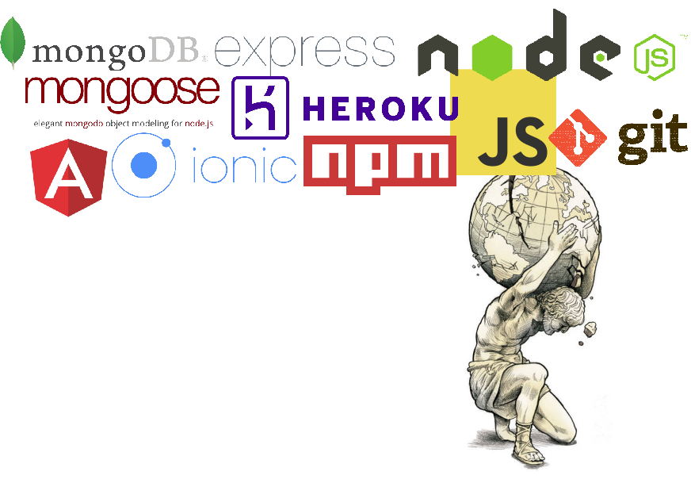

# COMEM+ Web-Oriented Architecture Course The goal of this course is to learn about the generic concept of **web service**, focusing on **REST**ful APIs as one way to expose such a service. You will: * Learn the **core principles** of the REST architectural style. * Learn how to **implement** a RESTful API in JavaScript with Node.js. * **Danage** your REST API on a cloud application platform. * Add a **real-time** component to your REST API with WebSockets. --- ## Free theme .breadcrumbs[<a href="#1">COMEM+ Web-Oriented Architecture Course</a>] .grid-60[ You can design and implement your own web service idea, as long as it meets the [evaluation criteria][eval]. Or you can choose one of the default projects that will be suggested. ] .grid-40[ <img class='w100' src='images/idea.jpg' /> ] --- ## This course .breadcrumbs[<a href="#1">COMEM+ Web-Oriented Architecture Course</a>] In this course, you will *develop* and *deploy* a **REST web service backend**: <p class='center'><img class='w90' src='images/course-scope.png'></p> --- ### Next course .breadcrumbs[<a href="#1">COMEM+ Web-Oriented Architecture Course</a> > <a href="#3">This course</a>] In the **next Mobile Development course**, you will develop a **hybrid mobile application frontend** to use your web service (or to use the web service that will be provided as a default). <p class='center'><img class='w90' src='images/citizen-engagement-mobile-app.jpg' /></p> --- ### Webcasts .breadcrumbs[<a href="#1">COMEM+ Web-Oriented Architecture Course</a> > <a href="#3">This course</a>] Take a look at what was done in this course the previous years: * https://youtu.be/6s2SCx0db90 * https://youtu.be/wki0t178x2k * https://youtu.be/Mu0KJCyIjf0 <p class='center'><img class='w70' src='images/citizen-engagement-1.jpg' /></p> --- ### Technologies .breadcrumbs[<a href="#1">COMEM+ Web-Oriented Architecture Course</a> > <a href="#3">This course</a>]  --- class: image-header ### Architecture .breadcrumbs[<a href="#1">COMEM+ Web-Oriented Architecture Course</a> > <a href="#3">This course</a>] <img src='images/architecture.png' width='100%' /> --- class: image-header ### Source code management .breadcrumbs[<a href="#1">COMEM+ Web-Oriented Architecture Course</a> > <a href="#3">This course</a>] <img src='images/source-code-management.png' width='100%' /> [eval]: https://github.com/MediaComem/comem-archioweb#evaluation